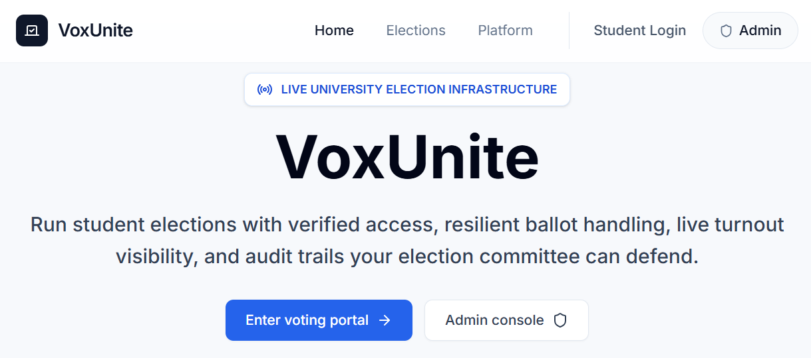
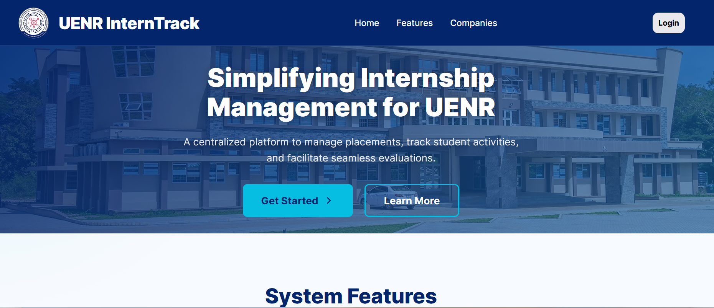
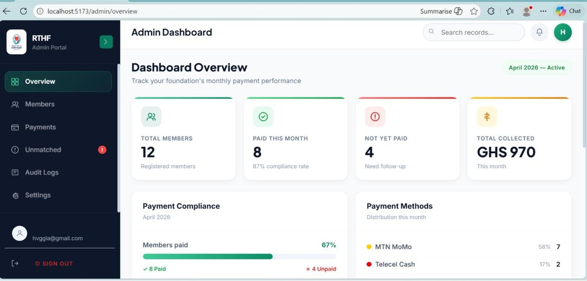
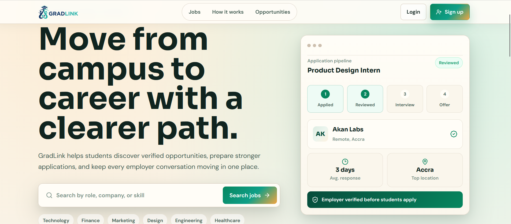

Dependable Software Engineering
Software quality, reliability, testing, maintainability, and secure design approaches that help systems behave predictably in real-world use.
DEPENDABLE COMPUTING · SOFTWARE ENGINEERING
I’m Haggla Mensah Agyei, a Software Engineer and Researcher in Dependable Computing from Ghana. I build and study software systems with a focus on reliability, security, maintainability, usability, and predictable behavior. My interests span dependable software engineering, distributed and cloud systems, and trustworthy AI-enabled software systems.
ABOUT ME
I am a Software Engineer and computing researcher from Ghana with a BSc in Information Technology from the University of Energy and Natural Resources (UENR), completed in 2026.
My work is motivated by a simple question: How can we design digital systems that people can genuinely depend on?
I am interested in dependable software engineering, software reliability and testing, distributed and cloud systems, and trustworthy AI-enabled software systems. I am particularly interested in moving beyond simply building functional software toward understanding how reliability, security, maintainability, usability, and predictable behavior can be demonstrated and improved.
Through academic and software development projects, I have worked on systems involving authentication, role-based access control, databases, APIs, digital workflows, payment processing, real-time communication, cloud deployment, and system evaluation.
RESEARCH INTERESTS
Software quality, reliability, testing, maintainability, and secure design approaches that help systems behave predictably in real-world use.
Testing and evaluation techniques for identifying failures, weaknesses, and unexpected behaviour before software reaches users.
Dependability in distributed and cloud-based systems, including fault tolerance, concurrency, observability, and predictable behaviour.
Understanding and critically evaluating AI-enabled software systems, with attention to reliability, security, transparency, and responsible integration.
Authentication, authorization, privacy, data protection, and secure software design as important components of dependable computing.
Exploring methods for understanding software behaviour, detecting weaknesses, and improving quality, maintainability, and dependability.
SELECTED WORK
A focused selection of systems I have designed and developed, showing how I approach reliability, security, software architecture, and practical problem solving.
FULL-STACK · DEPENDABLE SYSTEMS · REAL-TIME
A university digital voting platform designed for student elections, combining role-based administration, voter authentication, election management, audit logging, and real-time monitoring. The project also raised practical questions around privacy, metadata, auditability, and the dependability of digital voting systems.


RESEARCH PROJECT · INFORMATION SYSTEM
A web-based system for internship placement, digital logbooks, supervision, site visits, evaluation, and assessment. Developed using Design Science Research and evaluated through functional, integration, compatibility, performance, and formative usability testing.

WEB APPLICATION · PAYMENT VERIFICATION
A web-based donation platform integrating Paystack for online payments and backend transaction verification, with emphasis on validating payment events before they are trusted by the application.

FULL-STACK · REAL-TIME APPLICATION
A student–employer career platform supporting applicants, verified employers, administrators, job applications, and real-time communication.
TECHNICAL SKILLS
JavaScript, TypeScript, Python, C++, Java (basic), HTML5, CSS3
React, Vite, Node.js, Express, REST APIs, Socket.IO
MongoDB, MySQL
Authentication, authorization, RBAC, OTP workflows, hashing, HMAC, TCP/IP, LAN/WAN configuration, secure API design
Git, GitHub, Figma, Adobe Photoshop, Canva, Microsoft Office